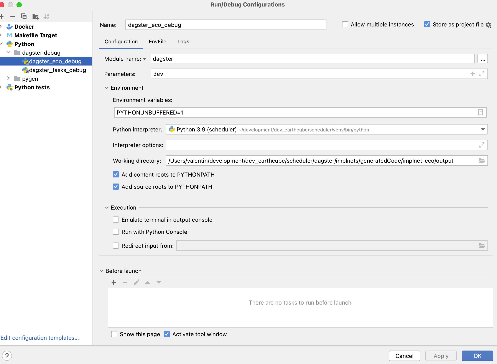

Development
If you look in the doc/README.md that description is probably better.
Two types:
2) dagster dev - Dagster runs the UI in development mode 1) Container based. This uses docker and locally deployed containers
!!! note
NOTE, the Dagster and the Code containers need to be the same.
For local development images are named dagster-local:latest and code containers named dagster-gleanerio-local:latest
and built in the compose_local.yaml
for production,
* dagster named: nsfearthcube/dagster-gleanerio:${CONTAINER_DAGSTER_TAG:-latest}
* code containers are named nsfearthcube/dagster-gleanerio-${PROJECT:-eco}:${CONTAINER_TAG:-latest}
eg in dockerhub.com as nsfearthcube/dagster-eco:latest
DAGSTER DEV
At the top level (dagster/implents) you can run
dagster dev
You need to set the environment based on dagster/implnets/deployment/envFile.env
It should run workflows/tasks/tasks
defined in the pyproject.toml
[tool.dagster]
module_name = "workflows.tasks.tasks"Setting up in pycharm
you can add runconfigs in pycharm 
You should/need to add the envFile plug in so that env files can be
testing tasks
cd dagster/implnets/workflows/tasks
You need to set the environment based on dagster/implnets/deployment/envFile.env
export $(sed '/^[ \t]*#/d' ../../deployment/.env | sed '/^$/d' | xargs)
dagster dev
will run just the task, and in editable form, i think.
TESTING CONTAINERS
Containers are a well tested approach. We deploy these container to production, so it's a good way to test. There are a set of required files:
- env variables file
- gleaner/nabu configuration files, without any passwords, servers. Those are handled in the env variables
- docker compose file
- docker networks and volumes for the compose files
- three files uploaded to docker as configs
- gleanerconfigs.yaml gleaner/nabu
- nabuconfigs.yaml - gleaner/nabu
- workspace.yaml -- dagster
- (opptional/advanced) add a compose_project_PROJECT_override.yaml file with additional containers
PORTAINER API KEY
note on how to do this. ''
Start
For production environments, script, dagster_setup_docker.sh should create the networks, volumes, and
upload configuration files
1) setup a project in configs directory, if one des not exist 2) add gleanerconfig.yaml, nabuconfig.yaml, and workspace.yaml (NOTE NEED A TEMPLATE FOR THIS) 1) copy envFile.env to .env, and edit 2) run ./dagster_localrun.sh 4) go to https://loclahost:3000/ 5) run a small test dataset.
cd dagster/implnets/deployment
cp envFile.env .env
# configure environment in .env
./dagster_localrun.sh
If you look in dagster_localrun.sh you can see that the $PROJECT variable is used to define what files to use, and define, and to setup a separate 'namespace' in traefik labels.
If you look in compose_local_eco_override.yaml you can see that additional mounts are added to the containers.
These can be customized in the compose_local_PROJECT_override.yaml for local development.
customizing the configs
for local development three configs
- configs/PROJECT/gleanerconfigs.yaml gleaner/nabu
- configs/PROJECT/nabuconfigs.yaml - gleaner/nabu
- configs/PROJECT/workspace.yaml -- dagster
Editing/testing code
if you run pygen, then you need to regnerate code. the makefile or a pycharm run config is the best way.
MOVING TO PRODUCTION
(NOTE NEED SOME MAKEFILES FOR THIS.)
you need to create a compose_project_PROJECT_override.yaml
After copying fragment from compose_local_PROJECT_override.yaml
1) CHANGE THE IMAGE TO docker.io/nsfearthcube/dagster-gleanerio-${PROJECT:-eco}:${CONTAINER_CODE_TAG:-latest}
2) remove the line: platform: linux/x86_64
For portainer,
Create a stack, and add override file using "additional_file" to add this to the stack
command line deploy
docker compose -env .env -f compose_project.yaml -f compose_project_PROJECT_override.yaml up
system not supporting multiple configs
If you are not using portainer, you need to create a merged config file.
Then you will merge the files. Preview with:
docker compose -f compose_project.yaml -f compose_project_PROJECT_override.yaml config
this should show you a merged file.
docker compose -f compose_project.yaml -f compose_project_PROJECT_override.yaml config > compose_project_PROJECT.yaml
then start docker compose with the merged file.